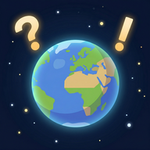

Frequently Asked Questions & Help
Yes! Geo Conquest is completely free to download and play, and every core feature is available without paying. The optional Conqueror Pass subscription multiplies the gold and XP you earn and unlocks exclusive avatars and quests.
No! Quiz content ships with the app, so all quiz modes work offline. Sign in once with your account, then play anywhere. Your progress syncs back up the next time you have a connection.
Never during a quiz — there are no interstitials and no banners interrupting play. Every ad in Geo Conquest is one you opt into, and each one pays you back:
Ignore all of them and the full game is still yours. Ads are served through Google AdMob; see the privacy policy for what that means for your data.
Both are shop upgrades. Open the Shop tab, go to Upgrades and buy the Capitals Quiz or Borders Quiz unlock with gold. Once bought, the mode stays unlocked on your account.
Those two are level-gated rather than bought. The Trail Quiz unlocks at player level 40, and The Gauntlet — the endgame mode — unlocks at player level 75.
Accuracy beats speed. A clean run pays far more than a sloppy one, and a perfect run doubles the XP you take home. On top of that, daily login streaks, quests and the daily leaderboard reward all pay in gold — and the Conqueror Pass multiplies the lot.
Players are ranked by XP. There are two boards: all-time, covering the total XP you have ever earned, and daily, covering XP earned since the daily reset. Whoever finishes first on the daily board picks up a gold and ticket reward. Both are in the Leaderboard tab.
Yes! Your progress syncs across iOS and Android. Sign in with the same account and your countries, gold, XP and level carry over.
The Conqueror Pass multiplies the gold and XP you earn from quizzes, daily logins and level-ups, multiplies your daily tickets, unlocks subscriber-only avatars and opens premium quests.
Refunds are handled by the store you bought from, not by us. Request one through Apple or Google directly — each has its own refund window and policy.
No. You can own every country and reach the top leaderboard rank without spending a thing. The pass changes how fast you get there and adds cosmetics — it does not raise the ceiling.
In order: (1) update to the latest version of Geo Conquest, (2) restart your device, (3) reinstall the app — your progress lives on your account, not the device. If it still crashes, email us with your device model, OS version and what you were doing when it happened.
Check that you are using the right email and password. Use Forgot Password? on the login screen to get a reset link, and check your spam folder if it does not arrive. If you originally signed up with Apple or Google, use that same button rather than an email and password.
Make sure you are signed in rather than playing as a guest, and that the device has had a connection since your last session so offline progress could sync. If something is still missing, email us with your username and roughly when it happened.
Can't find your answer? Email us at: bigbrainglob@gmail.com
Include: Your username, device, OS version, and description of the issue.